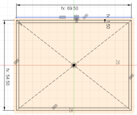

CAD Design
For this week I want to 3D Print a card holder for my TCG cards. I will be using Autodesk Fusion 360 and Affinity Designer (vector designer) for 3D modeling and logo designing, and 3D print with a Zortrax M200 printer.
Also I will be 3d modeling my final project concept.
3D Design
My "Deck Vault" will have 3 components: the body (largest part), top vault and top. The body will held my deck and the top vault will be used to put dices or any other game utility. Using Fusion I create 3 componentes, turning my part file into an assembly.
First I will design the body. Similar to Inventor, Fusion 360 starts with a sketch . Using the rectangular tool on Fusion I drew a "center rectangle", a rectangle with 2 points: the center and the diagonal.
Dimensions for this part will be: 70 mm wide, 55 mm large and 1.5 mm width for wall (3d printer minimal requirement). Extrusion will give the design 115 mm height.
With base part completed, sharp edges will be smoothed with a 1.5 mm fillet on inner and outter edges.
Second piece is the top compartment (upper). Same procedure as body: Rectangle tool on sketch (dimension will be 54.5x69.5mm and 1.5 width wall) and extrusion for basic form (21mm height and additional 1.5 mm for base). Same fillet radius for sharp edges.

The "crown" feature (serving as hard stop and avoiding the upper component to fall), is added on the top face of the component. This part will have a gap for top insertion. To avoid problems with haging parts, I will be using a triangular shape which is deducted from the front face (using extrude operation as cut).
Finally the top will be rectangular with a triangular feature for easy open. Picture on left shows how looks.
2D Design
Using Affinity Designer - a vector desginer - I will add a logo to the deck vault. Fusion uses SVG *Scalable Vector Graphics) format, so I will need to export my file into that format.
Using an image as a base, I use the pen tool to create the vector image. The pen tool allows to draw a line and then modify it freely. With that, I can draw the contour for extrusion on Fusion.
Once the contour is finished, Affinity allows to export to SVG directly.
Once exported, I return to Fusion o insert it on my 3D.
Once again in Fusion, I create a sketch, add the image, rescale it. Thanks to the SVG format, the file will scale nicely without losing resolution.

Once the image is well placed, the extrusion is made. To make the extrusion better fit for 3D Print, an small fillet (0.8mm) is used. Now the the solid is ready for 3D print on next assingment.
Finally the files are here.